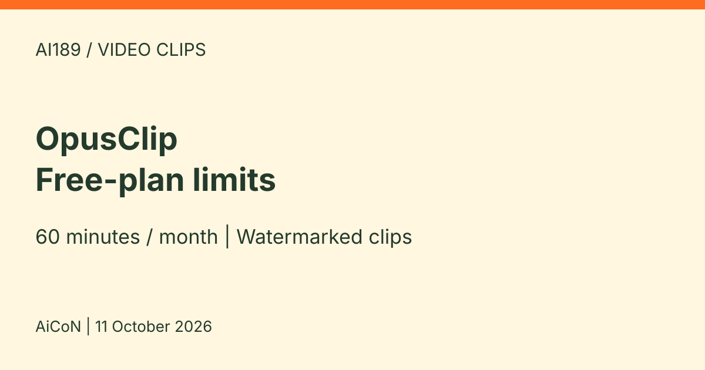

OpusClip: free plan with 60 minutes a month of AI short clips
OpusClip turns a long video into short clips. Its help center says the Free plan is free forever, with 60 processing minutes a month and a watermark on exports.

What it is
OpusClip is an AI video tool that cuts a long video into short clips. Its help center says you import a video from YouTube or a local file and it processes the video into clips, with AI captions that include emojis and keyword highlights. The pricing page also lists an auto hook and a 9:16 (vertical) format.
Is it free
Yes, with limits. OpusClip's help center says: "Our Free Plan is our basic plan but is free forever." It gives 60 processing minutes a month, and processing costs 1 credit per minute of the original video you import. The help center also says videos on the Free plan are watermarked, and the pricing page says projects expire after 3 days on Free. Paid Starter is about ₹1,450 per month ($15, monthly only), with 150 processing credits a month. Pro is about ₹2,810 per month ($29) on monthly billing, or about ₹1,400 per month equivalent ($14.50) on annual billing, charged as $174 for a year (about ₹16,840). Monthly Pro includes 300 credits per month; official help says annual Pro receives 3,600 for the year. These are approximate conversions at ₹96.78 per US dollar from Mataf on 11 October 2026, not verified India checkout prices. Check taxes, bank fees, selected pack count, renewal and cancellation terms before paying.
Is it available in India
The public pricing, help and privacy pages loaded, but that does not prove India account access, uploads or payment support. We did not test these. Prices were displayed in US dollars, so the INR figures are estimates, not local quotes.
How to try it
- Read the privacy terms first. The policy says children under 16 should not register or use the service. If acceptable, use the Free account route and check whether the dashboard is showing Free or a temporary paid-plan trial.
- Use a short, non-sensitive video you own or have permission to reuse. Paste a supported YouTube link or upload a local file. Check the processing timeframe and credit usage before submitting.
- Review generated clips, captions and framing before exporting. Free has no editing, so do not expect the paid editor. Download wanted clips within 3 days. A 30-minute source uses 30 credits, not the combined length of exported shorts. These are source-based steps, not our own product test.
Limits and privacy to know
- Free exports carry a watermark. Watermark-free export is a paid feature.
- The pricing card says clips are no longer exportable after 3 days; the comparison table labels media storage as expiring after 3 days. Download promptly. This is an access/export limit, not proof that all uploaded data is permanently erased then.
- The current privacy policy refers to use of personal data for AI research and model development. It gives an explicit opt-out for EU/EEA residents; we did not confirm the same option for India. Do not treat it as a no-training promise. It says servers are in the United States and data may be processed outside your country.
- AiCoN advice: only upload videos you own or have the right to reuse.
- Retention is described generally, not as a specific uploaded-video deletion deadline. The policy offers rights requests at contact@opus.pro and other-jurisdiction deletion requests at account.deletion@opus.pro, with legal exceptions and possible anonymous/aggregated retention.
- Credits are based on whole minutes: a source shorter than one minute costs 1 credit; a 4.5-minute source is counted as 4. Keep an eye on the displayed balance. We did not confirm Free credit rollover.
- We did not create an account, upload, process or export a clip, connect a social account or test checkout.
Frequently asked questions
Is OpusClip free?
Yes. The Free plan gives 60 processing minutes a month. Exports are watermarked and projects expire after 3 days.
Is 60 minutes the final video length?
No. It is processing capacity for the imported source video or selected processing timeframe, not 60 minutes of finished shorts.
Does three-day expiry mean my data is deleted?
Do not assume that. The pricing page describes a storage/export limit. The privacy policy does not give a specific uploaded-video deletion deadline.
What changed since this post?
Sources checked on 11 October 2026. Current pricing confirms no editing on Free, watermark and the three-day export limit. We added the annual Pro billing distinction and corrected the privacy caveat: the current policy does discuss AI research and model-development use, with a specifically EU/EEA opt-out. This is a source check, not a product trial.
Sources: Plans, How do credits work?, Pricing, Privacy policy, Mataf USD/INR conversion. Checked 11 October 2026.